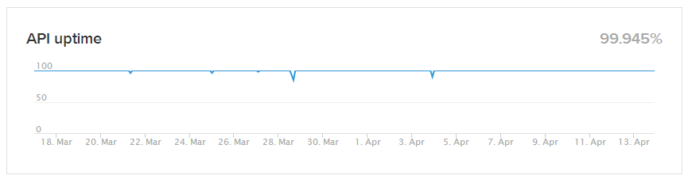

Releasing (enterprise-grade) software.
Let's consider our own products only.
When do we call software stable?
Being able to get work done.
In our case, that means: planning trips.
Availability
My pick of the litter.
3 Anti-patterns and 4 Patterns.
When failures in some parts of the system, make the rest fail as well
SLA's cascade: if all of the services we use guarantee 99,9% then our maximum will ever be about 99,5%
We should decouple our SLA guarantees
Well... RTFM! ;-)